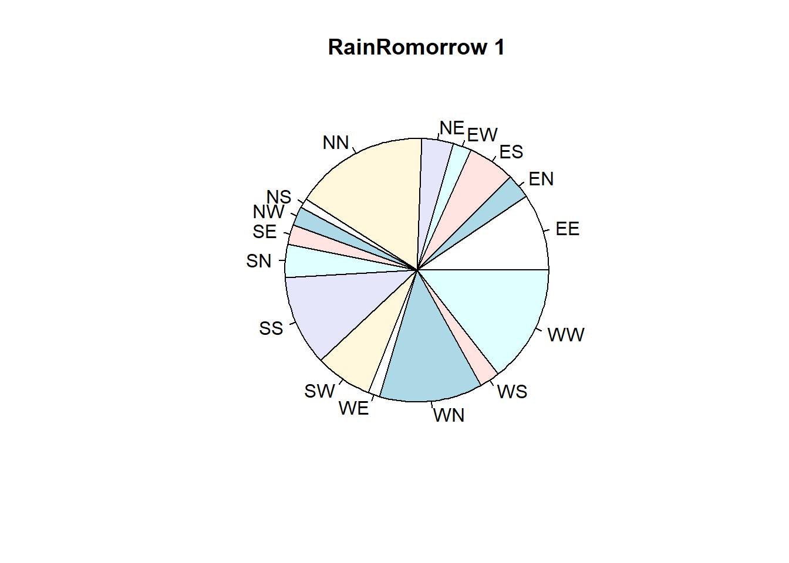

library(devtools)Ładowanie wymaganego pakietu: usethis(install Rtools43 first: https://cran.r-project.org/bin/windows/Rtools/rtools43/rtools.html)
library(devtools)Ładowanie wymaganego pakietu: usethisdevtools::install_github("dongyuanwu/RSBID")#<<<<<<< HEAD
library(corrplot)
library(xts)
library(lmtest)
library(quantmod)
library(dplyr)
library(tidyr)
library(fUnitRoots)
library(vars)
library(tseries)
library(aTSA)
library(car)
library(seasonal)
library(reshape2) #For creating correlation matrix for heatmap
library(ggplot2) #Tables, heatmaps
library(forecast)
library(kableExtra)
library(formattable)
library(Metrics)
library(TSEwgt)
#library(RSBID) #We will need SMOTE_NC from it
library(tidyverse)
#=======
library(dplyr) #data manipulation
library(formattable) #data manipulation
library(Metrics) #metrics
#library(MLmetrics) #metrics for machine learning (similar to Metrics library)
#library(e1071) #svm
#library(xgboost) #xgboost model
#library(caret) #dummy variables, precision metrics, knn
#library(RSBID) #We will need SMOTE_NC from it
library(tidyverse) #collection of packages for data science
#>>>>>>> 1b3e2b3bbf38c00b31d322a3bd672e29a047b39aData loading:
rain_df <- read.csv("weatherAUS.csv")tail(rain_df) Date Location MinTemp MaxTemp Rainfall Evaporation Sunshine
145455 2017-06-20 Uluru 3.5 21.8 0 NA NA
145456 2017-06-21 Uluru 2.8 23.4 0 NA NA
145457 2017-06-22 Uluru 3.6 25.3 0 NA NA
145458 2017-06-23 Uluru 5.4 26.9 0 NA NA
145459 2017-06-24 Uluru 7.8 27.0 0 NA NA
145460 2017-06-25 Uluru 14.9 NA 0 NA NA
WindGustDir WindGustSpeed WindDir9am WindDir3pm WindSpeed9am
145455 E 31 ESE E 15
145456 E 31 SE ENE 13
145457 NNW 22 SE N 13
145458 N 37 SE WNW 9
145459 SE 28 SSE N 13
145460 <NA> NA ESE ESE 17
WindSpeed3pm Humidity9am Humidity3pm Pressure9am Pressure3pm Cloud9am
145455 13 59 27 1024.7 1021.2 NA
145456 11 51 24 1024.6 1020.3 NA
145457 9 56 21 1023.5 1019.1 NA
145458 9 53 24 1021.0 1016.8 NA
145459 7 51 24 1019.4 1016.5 3
145460 17 62 36 1020.2 1017.9 8
Cloud3pm Temp9am Temp3pm RainToday RainTomorrow
145455 NA 9.4 20.9 No No
145456 NA 10.1 22.4 No No
145457 NA 10.9 24.5 No No
145458 NA 12.5 26.1 No No
145459 2 15.1 26.0 No No
145460 8 15.0 20.9 No <NA># Check the original shape of the dataset (rows, columns)
dim(rain_df)[1] 145460 23# Check for missing data in target variable
sum(is.na(rain_df$RainTomorrow))[1] 3267# Drop the data not including target variable since using them may later negativley influence the model
rain_df <- rain_df %>% drop_na(c("RainTomorrow"))
dim(rain_df)[1] 142193 23# Check distribution, look if balanced/imbalanced
table(rain_df$RainTomorrow)
No Yes
110316 31877 # Visualise distibution to check the impalance
barplot(table(rain_df$RainTomorrow)) 
There is a class imbalance in RainTommorow - Our target variable is imbalanced.
The data will be transformed from categorical into a numerical for process convinience where 1 will mean that it will rain tomorrow and 0 that it will not rain
# Replace objects Yes with 1 and No with 0
rain_df["RainTomorrow"][rain_df["RainTomorrow"] == "Yes"] <- 1
rain_df["RainTomorrow"][rain_df["RainTomorrow"] == "No"] <- 0
rain_df$RainTomorrow <- as.numeric(rain_df$RainTomorrow)
rain_df["RainTomorrow"]# Check for data type and data amount in columns.
str(rain_df)'data.frame': 142193 obs. of 23 variables:
$ Date : chr "2008-12-01" "2008-12-02" "2008-12-03" "2008-12-04" ...
$ Location : chr "Albury" "Albury" "Albury" "Albury" ...
$ MinTemp : num 13.4 7.4 12.9 9.2 17.5 14.6 14.3 7.7 9.7 13.1 ...
$ MaxTemp : num 22.9 25.1 25.7 28 32.3 29.7 25 26.7 31.9 30.1 ...
$ Rainfall : num 0.6 0 0 0 1 0.2 0 0 0 1.4 ...
$ Evaporation : num NA NA NA NA NA NA NA NA NA NA ...
$ Sunshine : num NA NA NA NA NA NA NA NA NA NA ...
$ WindGustDir : chr "W" "WNW" "WSW" "NE" ...
$ WindGustSpeed: int 44 44 46 24 41 56 50 35 80 28 ...
$ WindDir9am : chr "W" "NNW" "W" "SE" ...
$ WindDir3pm : chr "WNW" "WSW" "WSW" "E" ...
$ WindSpeed9am : int 20 4 19 11 7 19 20 6 7 15 ...
$ WindSpeed3pm : int 24 22 26 9 20 24 24 17 28 11 ...
$ Humidity9am : int 71 44 38 45 82 55 49 48 42 58 ...
$ Humidity3pm : int 22 25 30 16 33 23 19 19 9 27 ...
$ Pressure9am : num 1008 1011 1008 1018 1011 ...
$ Pressure3pm : num 1007 1008 1009 1013 1006 ...
$ Cloud9am : int 8 NA NA NA 7 NA 1 NA NA NA ...
$ Cloud3pm : int NA NA 2 NA 8 NA NA NA NA NA ...
$ Temp9am : num 16.9 17.2 21 18.1 17.8 20.6 18.1 16.3 18.3 20.1 ...
$ Temp3pm : num 21.8 24.3 23.2 26.5 29.7 28.9 24.6 25.5 30.2 28.2 ...
$ RainToday : chr "No" "No" "No" "No" ...
$ RainTomorrow : num 0 0 0 0 0 0 0 0 1 0 ...We can see that there are 23 variables in which:
1 Date: Date
7 Integer: Cloud9am, Cloud3pm, WindSpeed9am, WindSpeed3pm, Humidity9am, Humidity3pm, WindGustSpeed.
5 Character: Location, WindGustDir, WindDir9am, WindDir3pm ,RainToday.
9 Numerical: Temp9am, Temp3pm, Pressure9am, Pressure3pm, MinTemp, MaxTemp, Rainfall, Evaporation, Sunshine, RainTomorrow.
# Check for unique data for Categorical in order to decide weather one hot encoding is viable option.
n_distinct(rain_df$Date)[1] 3436n_distinct(rain_df$Location)[1] 49n_distinct(rain_df$MinTemp)[1] 390n_distinct(rain_df$MaxTemp)[1] 506n_distinct(rain_df$Rainfall)[1] 680n_distinct(rain_df$Evaporation)[1] 357n_distinct(rain_df$Sunshine)[1] 146n_distinct(rain_df$WindGustDir)[1] 17n_distinct(rain_df$WindGustDir)[1] 17n_distinct(rain_df$WindGustSpeed)[1] 68n_distinct(rain_df$WindDir9am)[1] 17n_distinct(rain_df$WindDir3pm)[1] 17n_distinct(rain_df$WindSpeed9am)[1] 44n_distinct(rain_df$WindSpeed3pm)[1] 45n_distinct(rain_df$Humidity9am)[1] 102n_distinct(rain_df$Humidity3pm)[1] 102n_distinct(rain_df$Pressure9am)[1] 547n_distinct(rain_df$Pressure3pm)[1] 550n_distinct(rain_df$Cloud9am)[1] 11n_distinct(rain_df$Cloud3pm)[1] 11n_distinct(rain_df$Temp9am)[1] 441n_distinct(rain_df$Temp3pm)[1] 501n_distinct(rain_df$RainToday)[1] 3n_distinct(rain_df$RainTomorrow)[1] 2Character data have to be further transofrmed in order to be used in the model.
# Look for invalid data
summary(rain_df) Date Location MinTemp MaxTemp
Length:142193 Length:142193 Min. :-8.50 Min. :-4.80
Class :character Class :character 1st Qu.: 7.60 1st Qu.:17.90
Mode :character Mode :character Median :12.00 Median :22.60
Mean :12.19 Mean :23.23
3rd Qu.:16.80 3rd Qu.:28.20
Max. :33.90 Max. :48.10
NA's :637 NA's :322
Rainfall Evaporation Sunshine WindGustDir
Min. : 0.00 Min. : 0.00 Min. : 0.00 Length:142193
1st Qu.: 0.00 1st Qu.: 2.60 1st Qu.: 4.90 Class :character
Median : 0.00 Median : 4.80 Median : 8.50 Mode :character
Mean : 2.35 Mean : 5.47 Mean : 7.62
3rd Qu.: 0.80 3rd Qu.: 7.40 3rd Qu.:10.60
Max. :371.00 Max. :145.00 Max. :14.50
NA's :1406 NA's :60843 NA's :67816
WindGustSpeed WindDir9am WindDir3pm WindSpeed9am
Min. : 6.00 Length:142193 Length:142193 Min. : 0
1st Qu.: 31.00 Class :character Class :character 1st Qu.: 7
Median : 39.00 Mode :character Mode :character Median : 13
Mean : 39.98 Mean : 14
3rd Qu.: 48.00 3rd Qu.: 19
Max. :135.00 Max. :130
NA's :9270 NA's :1348
WindSpeed3pm Humidity9am Humidity3pm Pressure9am
Min. : 0.00 Min. : 0.00 Min. : 0.00 Min. : 980.5
1st Qu.:13.00 1st Qu.: 57.00 1st Qu.: 37.00 1st Qu.:1012.9
Median :19.00 Median : 70.00 Median : 52.00 Median :1017.6
Mean :18.64 Mean : 68.84 Mean : 51.48 Mean :1017.7
3rd Qu.:24.00 3rd Qu.: 83.00 3rd Qu.: 66.00 3rd Qu.:1022.4
Max. :87.00 Max. :100.00 Max. :100.00 Max. :1041.0
NA's :2630 NA's :1774 NA's :3610 NA's :14014
Pressure3pm Cloud9am Cloud3pm Temp9am
Min. : 977.1 Min. :0.00 Min. :0.0 Min. :-7.20
1st Qu.:1010.4 1st Qu.:1.00 1st Qu.:2.0 1st Qu.:12.30
Median :1015.2 Median :5.00 Median :5.0 Median :16.70
Mean :1015.3 Mean :4.44 Mean :4.5 Mean :16.99
3rd Qu.:1020.0 3rd Qu.:7.00 3rd Qu.:7.0 3rd Qu.:21.60
Max. :1039.6 Max. :9.00 Max. :9.0 Max. :40.20
NA's :13981 NA's :53657 NA's :57094 NA's :904
Temp3pm RainToday RainTomorrow
Min. :-5.40 Length:142193 Min. :0.0000
1st Qu.:16.60 Class :character 1st Qu.:0.0000
Median :21.10 Mode :character Median :0.0000
Mean :21.69 Mean :0.2242
3rd Qu.:26.40 3rd Qu.:0.0000
Max. :46.70 Max. :1.0000
NA's :2726 # Look for missing data
sum(is.na(rain_df$Date))[1] 0sum(is.na(rain_df$Location))[1] 0sum(is.na(rain_df$MinTemp))[1] 637sum(is.na(rain_df$MaxTemp))[1] 322sum(is.na(rain_df$Rainfall))[1] 1406sum(is.na(rain_df$Evaporation))[1] 60843sum(is.na(rain_df$Sunshine))[1] 67816sum(is.na(rain_df$WindGustDir))[1] 9330sum(is.na(rain_df$WindGustDir))[1] 9330sum(is.na(rain_df$WindGustSpeed))[1] 9270sum(is.na(rain_df$WindDir9am))[1] 10013sum(is.na(rain_df$WindDir3pm))[1] 3778sum(is.na(rain_df$WindSpeed9am))[1] 1348sum(is.na(rain_df$WindSpeed3pm))[1] 2630sum(is.na(rain_df$Humidity9am))[1] 1774sum(is.na(rain_df$Humidity3pm))[1] 3610sum(is.na(rain_df$Pressure9am))[1] 14014sum(is.na(rain_df$Pressure3pm))[1] 13981sum(is.na(rain_df$Cloud9am))[1] 53657sum(is.na(rain_df$Cloud3pm))[1] 57094sum(is.na(rain_df$Temp9am))[1] 904sum(is.na(rain_df$Temp3pm))[1] 2726sum(is.na(rain_df$RainToday))[1] 1406sum(is.na(rain_df$RainTomorrow))[1] 0There seems to be a lot of missing data epsepcially in: Evaporation, Sunshine, Cloud9am, and Cloud3pm
It seems that variables Rainfall, Evaporation, WindGustSpeed, WindSpeed9am, WindSpeed3pm have very high difference betwen the mean and max value we will investigate this data using box plot.
IMPORTANT: We decided to limit our test and training data to those where ‘Sunshine’ variable is not null in order to reduce the amount of data used and to lower the number of null values in whole dataset
rain_df <- rain_df %>% drop_na(c("Sunshine"))# Check for missing data
sum(is.na(rain_df$Date)) [1] 0sum(is.na(rain_df$Location))[1] 0sum(is.na(rain_df$MinTemp))[1] 97sum(is.na(rain_df$MaxTemp))[1] 47sum(is.na(rain_df$Rainfall))[1] 395sum(is.na(rain_df$Evaporation))[1] 3959sum(is.na(rain_df$Sunshine))[1] 0sum(is.na(rain_df$WindGustDir))[1] 4377sum(is.na(rain_df$WindGustDir))[1] 4377sum(is.na(rain_df$WindGustSpeed))[1] 4354sum(is.na(rain_df$WindDir9am))[1] 2677sum(is.na(rain_df$WindDir3pm))[1] 680sum(is.na(rain_df$WindSpeed9am))[1] 171sum(is.na(rain_df$WindSpeed3pm))[1] 391sum(is.na(rain_df$Humidity9am))[1] 400sum(is.na(rain_df$Humidity3pm))[1] 575sum(is.na(rain_df$Pressure9am))[1] 133sum(is.na(rain_df$Pressure3pm))[1] 138sum(is.na(rain_df$Cloud9am))[1] 7898sum(is.na(rain_df$Cloud3pm))[1] 9484sum(is.na(rain_df$Temp9am))[1] 129sum(is.na(rain_df$Temp3pm))[1] 327sum(is.na(rain_df$RainToday))[1] 395sum(is.na(rain_df$RainTomorrow))[1] 0# fill missing data for numeric attributes with mean and median (if there are outliers [max values are much bigger than mean values] in our attribute we will use median)
rain_df$Temp3pm[is.na(rain_df$Temp3pm)] <- mean(rain_df$Temp3pm, na.rm = TRUE)
rain_df$Temp9am[is.na(rain_df$Temp9am)] <- mean(rain_df$Temp9am, na.rm = TRUE)
rain_df$Cloud3pm[is.na(rain_df$Cloud3pm)] <- mean(rain_df$Cloud3pm, na.rm = TRUE)
rain_df$Cloud9am[is.na(rain_df$Cloud9am)] <- mean(rain_df$Cloud9am, na.rm = TRUE)
rain_df$Pressure3pm[is.na(rain_df$Pressure3pm)] <- mean(rain_df$Pressure3pm, na.rm = TRUE)
rain_df$Pressure9am[is.na(rain_df$Pressure9am)] <- mean(rain_df$Pressure9am, na.rm = TRUE)
rain_df$Humidity3pm[is.na(rain_df$Humidity3pm)] <- mean(rain_df$Humidity3pm, na.rm = TRUE)
rain_df$Humidity9am[is.na(rain_df$Humidity9am)] <- mean(rain_df$Humidity9am, na.rm = TRUE)
rain_df$WindSpeed3pm[is.na(rain_df$WindSpeed3pm)] <- median(rain_df$WindSpeed3pm, na.rm = TRUE)
rain_df$WindSpeed9am[is.na(rain_df$WindSpeed9am)] <- median(rain_df$WindSpeed9am, na.rm = TRUE)
rain_df$WindGustSpeed[is.na(rain_df$WindGustSpeed)] <- median(rain_df$WindGustSpeed, na.rm = TRUE)
rain_df$Sunshine[is.na(rain_df$Sunshine)] <- mean(rain_df$Sunshine, na.rm = TRUE)
rain_df$RainToday[is.na(rain_df$RainToday)] <- mode(rain_df$RainToday)
rain_df$Evaporation <- ifelse(is.na(rain_df$Evaporation), median(rain_df$Evaporation, na.rm = TRUE), rain_df$Evaporation)
rain_df$Rainfall <- ifelse(is.na(rain_df$Rainfall), median(rain_df$Rainfall, na.rm = TRUE), rain_df$Rainfall)
rain_df$MaxTemp <- ifelse(is.na(rain_df$MaxTemp), mean(rain_df$MaxTemp, na.rm = TRUE), rain_df$MaxTemp)
rain_df$MinTemp <- ifelse(is.na(rain_df$MinTemp), mean(rain_df$MinTemp, na.rm = TRUE), rain_df$MinTemp)# Look for missing data again
sum(is.na(rain_df$Date)) [1] 0sum(is.na(rain_df$Location))[1] 0sum(is.na(rain_df$MinTemp))[1] 0sum(is.na(rain_df$MaxTemp))[1] 0sum(is.na(rain_df$Rainfall))[1] 0sum(is.na(rain_df$Evaporation))[1] 0sum(is.na(rain_df$Sunshine))[1] 0sum(is.na(rain_df$WindGustDir))[1] 4377sum(is.na(rain_df$WindGustSpeed))[1] 0sum(is.na(rain_df$WindDir9am))[1] 2677sum(is.na(rain_df$WindDir3pm))[1] 680sum(is.na(rain_df$WindSpeed9am))[1] 0sum(is.na(rain_df$WindSpeed3pm))[1] 0sum(is.na(rain_df$Humidity9am))[1] 0sum(is.na(rain_df$Humidity3pm))[1] 0sum(is.na(rain_df$Pressure9am))[1] 0sum(is.na(rain_df$Pressure3pm))[1] 0sum(is.na(rain_df$Cloud9am))[1] 0sum(is.na(rain_df$Cloud3pm))[1] 0sum(is.na(rain_df$Temp9am))[1] 0sum(is.na(rain_df$Temp3pm))[1] 0sum(is.na(rain_df$RainToday))[1] 0sum(is.na(rain_df$RainTomorrow))[1] 0# Chgeck the amount of data after dropping sunshine variable na
dim(rain_df)[1] 74377 23# Check for outliers using Box Plot
boxplot(Rainfall ~ RainTomorrow, data = rain_df) # Check on histogram
hist(rain_df$Rainfall)
# Use IQR to define range of valid data
Q1 <- quantile(rain_df$Rainfall, 0.25)
Q3 <- quantile(rain_df$Rainfall, 0.75)
IQR <- Q3 - Q1
Low <- Q1 - IQR * 1.5
High <- Q3 + IQR * 1.5
print(Low) 25%
-1.2 print(High)75%
2 # Check the amount of outliers
count1 <- sum(rain_df$Rainfall > High)
count2 <- sum(rain_df$Rainfall < Low)
count3 <- count1 + count2
print(count1)[1] 13344print(count2)[1] 0# We decided to censor our data to value of 75, because our variable is not normally distributed (high density of data near 0)
rain_df$Rainfall[rain_df$Rainfall > 75] <- 75# Check changes on histogram
hist(rain_df$Rainfall)
# Check Box Plot again
boxplot(Rainfall ~ RainTomorrow, data = rain_df)
# Check for outliers using Box Plot
boxplot(Evaporation ~ RainTomorrow, data = rain_df) 
# Check on histogram
hist(rain_df$Evaporation)
# Use IQR to define range of valid data
Q1 <- quantile(rain_df$Evaporation, 0.25)
Q3 <- quantile(rain_df$Evaporation, 0.75)
IQR <- Q3 - Q1
Low <- Q1 - IQR * 1.5
High <- Q3 + IQR * 1.5
print(Low) 25%
-3.5 print(High) 75%
13.3 # Check the amount of outliers
count1 <- sum(rain_df$Evaporation > High)
count2 <- sum(rain_df$Evaporation < Low)
count3 <- count1 + count2
print(count1)[1] 2017print(count2)[1] 0# Change outliers respectivley to upper boundry since (relativley) there is not too many outliers
rain_df$Evaporation[rain_df$Evaporation > High] <- High# Check changes on histogram
hist(rain_df$Evaporation)
# Check Box Plot again
boxplot(Evaporation ~ RainTomorrow, data = rain_df)
# Check for outliers using Box Plot
boxplot(WindGustSpeed ~ RainTomorrow, data = rain_df) 
# Check on histogram
hist(rain_df$WindGustSpeed)# Use IQR to define range of valid data
Q1 <- quantile(rain_df$WindGustSpeed, 0.25)
Q3 <- quantile(rain_df$WindGustSpeed, 0.75)
IQR <- Q3 - Q1
Low <- Q1 - IQR * 1.5
High <- Q3 + IQR * 1.5
print(Low)25%
5.5 print(High) 75%
73.5 # Check the amount of outliers
count1 <- sum(rain_df$WindGustSpeed > High)
count2 <- sum(rain_df$WindGustSpeed < Low)
count3 <- count1 + count2
print(count1)[1] 1703print(count2)[1] 0# Change outliers respectivley to upper boundry since (relativley) there is not too many outliers
rain_df$WindGustSpeed[rain_df$WindGustSpeed > High] <- High# Check changes on histogram
hist(rain_df$WindGustSpeed)# Check Box Plot again
boxplot(WindGustSpeed ~ RainTomorrow, data = rain_df)
# Check for outliers using Box Plot
boxplot(WindSpeed9am ~ RainTomorrow, data = rain_df) # Check on histogram
hist(rain_df$WindSpeed9am)
# Use IQR to define range of valid data
Q1 <- quantile(rain_df$WindSpeed9am, 0.25)
Q3 <- quantile(rain_df$WindSpeed9am, 0.75)
IQR <- Q3 - Q1
Low <- Q1 - IQR * 1.5
High <- Q3 + IQR * 1.5
print(Low) 25%
-7.5 print(High) 75%
36.5 # Check the amount of outliers
count1 <- sum(rain_df$WindSpeed9am > High)
count2 <- sum(rain_df$WindSpeed9am < Low)
count3 <- count1 + count2
print(count1)[1] 1374print(count2)[1] 0# Change outliers respectivley to upper boundry since (relativley) there is not too many outliers
rain_df$WindSpeed9am[rain_df$WindSpeed9am > High] <- High# Check changes on histogram
hist(rain_df$WindSpeed9am)# Check Box Plot again
boxplot(WindSpeed9am ~ RainTomorrow, data = rain_df)# Check for outliers using Box Plot
boxplot(WindSpeed3pm ~ RainTomorrow, data = rain_df) # Check on histogram
hist(rain_df$WindSpeed3pm)
# Use IQR to define range of valid data
Q1 <- quantile(rain_df$WindSpeed3pm, 0.25)
Q3 <- quantile(rain_df$WindSpeed3pm, 0.75)
IQR <- Q3 - Q1
Low <- Q1 - IQR * 1.5
High <- Q3 + IQR * 1.5
print(Low) 25%
-3.5 print(High) 75%
40.5 # Check the amount of outliers
count1 <- sum(rain_df$WindSpeed3pm > High)
count2 <- sum(rain_df$WindSpeed3pm < Low)
count3 <- count1 + count2
print(count1)[1] 1273print(count2)[1] 0# Change outliers respectivley to upper boundry since (relativley) there is not too many outliers
rain_df$WindSpeed3pm[rain_df$WindSpeed3pm > High] <- High# Check changes on histogram
hist(rain_df$WindSpeed3pm)# Check Box Plot again
boxplot(WindSpeed3pm ~ RainTomorrow, data = rain_df)
There was a lot of outliers in variables Rainfall, Evaporation, WindGustSpeed, WindSpeed9am, WindSpeed3pm after further investigation we decided to change the outstanding values, using IQR in order to determine the maximal and minimal value we changed the data respectivley.
# Since the wind direction were wide spread and very specific we decided to simplify the data by puting them into categories based on dominant direction, filled the missing data for wind direction using mode.
rain_df$WindDir9am[rain_df$WindDir9am == "NNW"] <- "N"
rain_df$WindDir9am[rain_df$WindDir9am == "NNE"] <- "N"
rain_df$WindDir9am[rain_df$WindDir9am == "NE"] <- "N"
rain_df$WindDir9am[rain_df$WindDir9am == "N"] <- "N"
rain_df$WindDir9am[rain_df$WindDir9am == "ENE"] <- "E"
rain_df$WindDir9am[rain_df$WindDir9am == "ESE"] <- "E"
rain_df$WindDir9am[rain_df$WindDir9am == "SE"] <- "E"
rain_df$WindDir9am[rain_df$WindDir9am == "E"] <- "E"
rain_df$WindDir9am[rain_df$WindDir9am == "SSE"] <- "S"
rain_df$WindDir9am[rain_df$WindDir9am == "SSW"] <- "S"
rain_df$WindDir9am[rain_df$WindDir9am == "SW"] <- "S"
rain_df$WindDir9am[rain_df$WindDir9am == "s"] <- "S"
rain_df$WindDir9am[rain_df$WindDir9am == "WSW"] <- "W"
rain_df$WindDir9am[rain_df$WindDir9am == "WNW"] <- "W"
rain_df$WindDir9am[rain_df$WindDir9am == "NW"] <- "W"
rain_df$WindDir9am[rain_df$WindDir9am == "W"] <- "W"
rain_df$WindDir9am[rain_df$WindDir9am == "NNW"] <- "N"
rain_df$WindDir9am[rain_df$WindDir9am == "NNE"] <- "N"
rain_df$WindDir9am[rain_df$WindDir9am == "NE"] <- "N"
rain_df$WindDir9am[rain_df$WindDir9am == "N"] <- "N"
rain_df$WindDir9am[rain_df$WindDir9am == "ENE"] <- "E"
rain_df$WindDir9am[rain_df$WindDir9am == "ESE"] <- "E"
rain_df$WindDir9am[rain_df$WindDir9am == "SE"] <- "E"
rain_df$WindDir9am[rain_df$WindDir9am == "E"] <- "E"
rain_df$WindDir9am[rain_df$WindDir9am == "SSE"] <- "S"
rain_df$WindDir9am[rain_df$WindDir9am == "SSW"] <- "S"
rain_df$WindDir9am[rain_df$WindDir9am == "SW"] <- "S"
rain_df$WindDir9am[rain_df$WindDir9am == "s"] <- "S"
rain_df$WindDir9am[rain_df$WindDir9am == "WSW"] <- "W"
rain_df$WindDir9am[rain_df$WindDir9am == "WNW"] <- "W"
rain_df$WindDir9am[rain_df$WindDir9am == "NW"] <- "W"
rain_df$WindDir9am[rain_df$WindDir9am == "W"] <- "W"
rain_df$WindDir3pm[rain_df$WindDir3pm == "NNW"] <- "N"
rain_df$WindDir3pm[rain_df$WindDir3pm == "NNE"] <- "N"
rain_df$WindDir3pm[rain_df$WindDir3pm == "NE"] <- "N"
rain_df$WindDir3pm[rain_df$WindDir3pm == "N"] <- "N"
rain_df$WindDir3pm[rain_df$WindDir3pm == "ENE"] <- "E"
rain_df$WindDir3pm[rain_df$WindDir3pm == "ESE"] <- "E"
rain_df$WindDir3pm[rain_df$WindDir3pm == "SE"] <- "E"
rain_df$WindDir3pm[rain_df$WindDir3pm == "E"] <- "E"
rain_df$WindDir3pm[rain_df$WindDir3pm == "SSE"] <- "S"
rain_df$WindDir3pm[rain_df$WindDir3pm == "SSW"] <- "S"
rain_df$WindDir3pm[rain_df$WindDir3pm == "SW"] <- "S"
rain_df$WindDir3pm[rain_df$WindDir3pm == "S"] <- "S"
rain_df$WindDir3pm[rain_df$WindDir3pm == "WSW"] <- "W"
rain_df$WindDir3pm[rain_df$WindDir3pm == "WNW"] <- "W"
rain_df$WindDir3pm[rain_df$WindDir3pm == "NW"] <- "W"
rain_df$WindDir3pm[rain_df$WindDir3pm == "W"] <- "W"
rain_df$WindGustDir[rain_df$WindGustDir == "NNW"] <- "N"
rain_df$WindGustDir[rain_df$WindGustDir == "NNE"] <- "N"
rain_df$WindGustDir[rain_df$WindGustDir == "NE"] <- "N"
rain_df$WindGustDir[rain_df$WindGustDir == "N"] <- "N"
rain_df$WindGustDir[rain_df$WindGustDir == "ENE"] <- "E"
rain_df$WindGustDir[rain_df$WindGustDir == "ESE"] <- "E"
rain_df$WindGustDir[rain_df$WindGustDir == "SE"] <- "E"
rain_df$WindGustDir[rain_df$WindGustDir == "E"] <- "E"
rain_df$WindGustDir[rain_df$WindGustDir == "SSE"] <- "S"
rain_df$WindGustDir[rain_df$WindGustDir == "SSW"] <- "S"
rain_df$WindGustDir[rain_df$WindGustDir == "SW"] <- "S"
rain_df$WindGustDir[rain_df$WindGustDir == "S"] <- "S"
rain_df$WindGustDir[rain_df$WindGustDir == "WSW"] <- "W"
rain_df$WindGustDir[rain_df$WindGustDir == "WNW"] <- "W"
rain_df$WindGustDir[rain_df$WindGustDir == "NW"] <- "W"
rain_df$WindGustDir[rain_df$WindGustDir == "W"] <- "W"
tail(rain_df) Date Location MinTemp MaxTemp Rainfall Evaporation Sunshine
74372 2017-06-19 Darwin 21.9 33.0 0 5.2 10.9
74373 2017-06-20 Darwin 19.3 33.4 0 6.0 11.0
74374 2017-06-21 Darwin 21.2 32.6 0 7.6 8.6
74375 2017-06-22 Darwin 20.7 32.8 0 5.6 11.0
74376 2017-06-23 Darwin 19.5 31.8 0 6.2 10.6
74377 2017-06-24 Darwin 20.2 31.7 0 5.6 10.7
WindGustDir WindGustSpeed WindDir9am WindDir3pm WindSpeed9am WindSpeed3pm
74372 E 44 E E 15 19
74373 E 35 E N 9 20
74374 E 37 E E 13 11
74375 E 33 E W 17 11
74376 E 26 E N 9 17
74377 E 30 E N 15 7
Humidity9am Humidity3pm Pressure9am Pressure3pm Cloud9am Cloud3pm Temp9am
74372 43 28 1014.6 1010.6 1 1 25.1
74373 63 32 1013.9 1010.5 0 1 24.5
74374 56 28 1014.6 1011.2 7 0 24.8
74375 46 23 1015.3 1011.8 0 0 24.8
74376 62 58 1014.9 1010.7 1 1 24.8
74377 73 32 1013.9 1009.7 6 5 25.4
Temp3pm RainToday RainTomorrow
74372 32.7 No 0
74373 32.3 No 0
74374 32.0 No 0
74375 32.1 No 0
74376 29.2 No 0
74377 31.0 No 0#Filling NA with mode
Mode <- function(x) {
ux <- unique(x)
ux[which.max(tabulate(match(x, ux)))]
}
rain_df$RainToday[is.na(rain_df$RainToday)] <- Mode(rain_df$RainToday)
rain_df$WindDir9am[is.na(rain_df$WindDir9am)] <- Mode(rain_df$WindDir9am)
rain_df$WindDir3pm[is.na(rain_df$WindDir3pm)] <- Mode(rain_df$WindDir3pm)
rain_df$WindGustDir[is.na(rain_df$WindGustDir)] <- Mode(rain_df$WindGustDir)n_distinct(rain_df$Date)[1] 3436# Change into datetime format in order to extarct month.
rain_df$Date <- as.POSIXct(rain_df$Date)
rain_df$Date <- month(rain_df$Date)
names(rain_df)[names(rain_df) == "Date"] <- "Month"
tail(rain_df) Month Location MinTemp MaxTemp Rainfall Evaporation Sunshine WindGustDir
74372 6 Darwin 21.9 33.0 0 5.2 10.9 E
74373 6 Darwin 19.3 33.4 0 6.0 11.0 E
74374 6 Darwin 21.2 32.6 0 7.6 8.6 E
74375 6 Darwin 20.7 32.8 0 5.6 11.0 E
74376 6 Darwin 19.5 31.8 0 6.2 10.6 E
74377 6 Darwin 20.2 31.7 0 5.6 10.7 E
WindGustSpeed WindDir9am WindDir3pm WindSpeed9am WindSpeed3pm Humidity9am
74372 44 E E 15 19 43
74373 35 E N 9 20 63
74374 37 E E 13 11 56
74375 33 E W 17 11 46
74376 26 E N 9 17 62
74377 30 E N 15 7 73
Humidity3pm Pressure9am Pressure3pm Cloud9am Cloud3pm Temp9am Temp3pm
74372 28 1014.6 1010.6 1 1 25.1 32.7
74373 32 1013.9 1010.5 0 1 24.5 32.3
74374 28 1014.6 1011.2 7 0 24.8 32.0
74375 23 1015.3 1011.8 0 0 24.8 32.1
74376 58 1014.9 1010.7 1 1 24.8 29.2
74377 32 1013.9 1009.7 6 5 25.4 31.0
RainToday RainTomorrow
74372 No 0
74373 No 0
74374 No 0
74375 No 0
74376 No 0
74377 No 0# Creating delta varibles to check if changes in relation to data for example: change of wind speed from 9am to 3pm has impact on 'raintommorow' prediction
rain_df$DeltaWindSpeed <- rain_df$WindSpeed3pm - rain_df$WindSpeed9am
rain_df$DeltaHumidity <- rain_df$Humidity3pm - rain_df$Humidity9am
rain_df$DeltaPressure <- rain_df$Pressure3pm - rain_df$Pressure9am
rain_df$DeltaCloud <- rain_df$Cloud3pm - rain_df$Cloud9amtail(rain_df) Month Location MinTemp MaxTemp Rainfall Evaporation Sunshine WindGustDir
74372 6 Darwin 21.9 33.0 0 5.2 10.9 E
74373 6 Darwin 19.3 33.4 0 6.0 11.0 E
74374 6 Darwin 21.2 32.6 0 7.6 8.6 E
74375 6 Darwin 20.7 32.8 0 5.6 11.0 E
74376 6 Darwin 19.5 31.8 0 6.2 10.6 E
74377 6 Darwin 20.2 31.7 0 5.6 10.7 E
WindGustSpeed WindDir9am WindDir3pm WindSpeed9am WindSpeed3pm Humidity9am
74372 44 E E 15 19 43
74373 35 E N 9 20 63
74374 37 E E 13 11 56
74375 33 E W 17 11 46
74376 26 E N 9 17 62
74377 30 E N 15 7 73
Humidity3pm Pressure9am Pressure3pm Cloud9am Cloud3pm Temp9am Temp3pm
74372 28 1014.6 1010.6 1 1 25.1 32.7
74373 32 1013.9 1010.5 0 1 24.5 32.3
74374 28 1014.6 1011.2 7 0 24.8 32.0
74375 23 1015.3 1011.8 0 0 24.8 32.1
74376 58 1014.9 1010.7 1 1 24.8 29.2
74377 32 1013.9 1009.7 6 5 25.4 31.0
RainToday RainTomorrow DeltaWindSpeed DeltaHumidity DeltaPressure
74372 No 0 4 -15 -4.0
74373 No 0 11 -31 -3.4
74374 No 0 -2 -28 -3.4
74375 No 0 -6 -23 -3.5
74376 No 0 8 -4 -4.2
74377 No 0 -8 -41 -4.2
DeltaCloud
74372 0
74373 1
74374 -7
74375 0
74376 0
74377 -1#Looking for correlation with the 'RainTommorow' to pick the best attributes
Num_rain_df <- data.frame(rain_df$Month, rain_df$MinTemp, rain_df$MaxTemp, rain_df$Rainfall, rain_df$Evaporation, rain_df$Sunshine, rain_df$WindGustSpeed, rain_df$WindSpeed9am, rain_df$WindSpeed3pm, rain_df$Humidity9am, rain_df$Humidity3pm, rain_df$Pressure9am, rain_df$Pressure3pm, rain_df$Cloud9am, rain_df$Cloud3pm, rain_df$Temp9am, rain_df$Temp3pm, rain_df$RainTomorrow, rain_df$DeltaWindSpeed, rain_df$DeltaHumidity, rain_df$DeltaPressure, rain_df$DeltaCloud)
cor(Num_rain_df[, colnames(Num_rain_df) !="RainTomorrow"], Num_rain_df$rain_df.RainTomorrow) [,1]
rain_df.Month 0.010489571
rain_df.MinTemp 0.076784501
rain_df.MaxTemp -0.161219235
rain_df.Rainfall 0.259304203
rain_df.Evaporation -0.132726683
rain_df.Sunshine -0.450768063
rain_df.WindGustSpeed 0.227080260
rain_df.WindSpeed9am 0.085647235
rain_df.WindSpeed3pm 0.089735509
rain_df.Humidity9am 0.263618992
rain_df.Humidity3pm 0.446296092
rain_df.Pressure9am -0.262674216
rain_df.Pressure3pm -0.238320816
rain_df.Cloud9am 0.304598027
rain_df.Cloud3pm 0.367823067
rain_df.Temp9am -0.031518458
rain_df.Temp3pm -0.195776190
rain_df.RainTomorrow 1.000000000
rain_df.DeltaWindSpeed 0.003678791
rain_df.DeltaHumidity 0.261290262
rain_df.DeltaPressure 0.093695611
rain_df.DeltaCloud 0.044685159Most correlated more than 0.09 with RainTommorow:
Sunshine, Pressure9am, Pressure3pm, Temp3pm, MaxTemp, Evaporation, WindGustSpeed, Rainfall, Cloud9am, Humidity9am, DeltaHumidity, Cloud3pm, Humidity3pm, DeltaPressure.
# Like the previous case but with categorical data creating the variable to investigate relation of change in wind direction to the 'RainTommorow'
rain_df$WindChange <- cbind (rain_df$WindDir3pm, rain_df$WindDir9am)#{r} pie()
#{r} pie(WindDir9am ~ RainTomorrow, data = rain_df)
# Replace objects Yes with 1 and No with 0
rain_df["RainToday"][rain_df["RainToday"] == "Yes"] <- 1
rain_df["RainToday"][rain_df["RainToday"] == "No"] <- 0
rain_df$RainToday <- as.numeric(rain_df$RainToday)Warning: pojawiły się wartości NA na skutek przekształceniarain_df$RainToday[is.na(rain_df$RainToday)] <- Mode(rain_df$RainToday)# Look for missing data
sum(is.na(rain_df$Date)) [1] 0sum(is.na(rain_df$Location))[1] 0sum(is.na(rain_df$MinTemp))[1] 0sum(is.na(rain_df$MaxTemp))[1] 0sum(is.na(rain_df$Rainfall))[1] 0sum(is.na(rain_df$Evaporation))[1] 0sum(is.na(rain_df$Sunshine))[1] 0sum(is.na(rain_df$WindGustDir))[1] 0sum(is.na(rain_df$WindGustSpeed))[1] 0sum(is.na(rain_df$WindDir9am))[1] 0sum(is.na(rain_df$WindDir3pm))[1] 0sum(is.na(rain_df$WindSpeed9am))[1] 0sum(is.na(rain_df$WindSpeed3pm))[1] 0sum(is.na(rain_df$Humidity9am))[1] 0sum(is.na(rain_df$Humidity3pm))[1] 0sum(is.na(rain_df$Pressure9am))[1] 0sum(is.na(rain_df$Pressure3pm))[1] 0sum(is.na(rain_df$Cloud9am))[1] 0sum(is.na(rain_df$Cloud3pm))[1] 0sum(is.na(rain_df$Temp9am))[1] 0sum(is.na(rain_df$Temp3pm))[1] 0sum(is.na(rain_df$RainToday))[1] 0sum(is.na(rain_df$RainTomorrow))[1] 0#Change all variables into numerical to check correlation **added part**
rain_df$WindDir9am[rain_df$WindDir9am == "N"] <- 1
rain_df$WindDir9am[rain_df$WindDir9am == "E"] <- 10
rain_df$WindDir9am[rain_df$WindDir9am == "S"] <- 100
rain_df$WindDir9am[rain_df$WindDir9am == "W"] <- 1000
rain_df$WindDir9am[rain_df$WindDir9am == "N"] <- 1
rain_df$WindDir9am[rain_df$WindDir9am == "E"] <- 10
rain_df$WindDir9am[rain_df$WindDir9am == "S"] <- 100
rain_df$WindDir9am[rain_df$WindDir9am == "W"] <- 1000
rain_df$WindDir3pm[rain_df$WindDir3pm == "N"] <- 1
rain_df$WindDir3pm[rain_df$WindDir3pm == "E"] <- 10
rain_df$WindDir3pm[rain_df$WindDir3pm == "S"] <- 100
rain_df$WindDir3pm[rain_df$WindDir3pm == "W"] <- 1000
rain_df$WindGustDir[rain_df$WindGustDir == "N"] <- 1
rain_df$WindGustDir[rain_df$WindGustDir == "E"] <- 10
rain_df$WindGustDir[rain_df$WindGustDir == "S"] <- 100
rain_df$WindGustDir[rain_df$WindGustDir == "W"] <- 1000
rain_df$WindGustDir <- as.numeric(rain_df$WindGustDir)
rain_df$WindDir9am <- as.numeric(rain_df$WindDir9am)
rain_df$WindDir3pm <- as.numeric(rain_df$WindDir3pm)
rain_df$WindGustSpeed <- as.numeric(rain_df$WindGustSpeed)
rain_df$Humidity3pm <- as.numeric(rain_df$Humidity3pm)
rain_df$Humidity9am <- as.numeric(rain_df$Humidity9am)
rain_df$WindSpeed3pm <- as.numeric(rain_df$WindSpeed3pm)
rain_df$WindSpeed9am <- as.numeric(rain_df$WindSpeed9am)
rain_df$Cloud3pm <- as.numeric(rain_df$Cloud3pm)
rain_df$Cloud9am <- as.numeric(rain_df$Cloud9am)#Select best features
rain_df_selected <- data.frame(rain_df$Month, rain_df$RainTomorrow, rain_df$Sunshine, rain_df$Pressure9am, rain_df$Pressure3pm, rain_df$Temp3pm, rain_df$MaxTemp, rain_df$WindGustSpeed, rain_df$Rainfall, rain_df$Cloud9am, rain_df$Humidity9am, rain_df$DeltaHumidity, rain_df$Cloud3pm, rain_df$Evaporation , rain_df$RainToday, rain_df$Humidity3pm, rain_df$WindGustDir, rain_df$DeltaPressure)
rain_df_selected$WindChange <- rain_df$WindDir3pm - rain_df$WindDir9am#Look for correlation between features
cor_df <- round(cor(rain_df_selected), 2)
m_cor_df <- melt(cor_df)
ggplot(data = m_cor_df, aes(x=Var1, y=Var2, fill=value)) + geom_tile() + geom_text(aes(label = value), size = 1) + scale_fill_gradient2(low = "darkred", high = "red",)
Strong correlation:
Pressure9am and Pressure3pm
MaxTemp and Temp3pm
#Drop features with strong correlation
rain_df_selected <- rain_df_selected[-4]
rain_df_selected <- rain_df_selected[-5]# Check selected data
tail(rain_df_selected) rain_df.Month rain_df.RainTomorrow rain_df.Sunshine rain_df.Pressure3pm
74372 6 0 10.9 1010.6
74373 6 0 11.0 1010.5
74374 6 0 8.6 1011.2
74375 6 0 11.0 1011.8
74376 6 0 10.6 1010.7
74377 6 0 10.7 1009.7
rain_df.MaxTemp rain_df.WindGustSpeed rain_df.Rainfall rain_df.Cloud9am
74372 33.0 44 0 1
74373 33.4 35 0 0
74374 32.6 37 0 7
74375 32.8 33 0 0
74376 31.8 26 0 1
74377 31.7 30 0 6
rain_df.Humidity9am rain_df.DeltaHumidity rain_df.Cloud3pm
74372 43 -15 1
74373 63 -31 1
74374 56 -28 0
74375 46 -23 0
74376 62 -4 1
74377 73 -41 5
rain_df.Evaporation rain_df.RainToday rain_df.Humidity3pm
74372 5.2 0 28
74373 6.0 0 32
74374 7.6 0 28
74375 5.6 0 23
74376 6.2 0 58
74377 5.6 0 32
rain_df.WindGustDir rain_df.DeltaPressure WindChange
74372 10 -4.0 0
74373 10 -3.4 -9
74374 10 -3.4 0
74375 10 -3.5 990
74376 10 -4.2 -9
74377 10 -4.2 -9#Check again for strong correlation between features
cor_df <- round(cor(rain_df_selected), 2)
m_cor_df <- melt(cor_df)
ggplot(data = m_cor_df, aes(x=Var1, y=Var2, fill=value)) + geom_tile() + geom_text(aes(label = value), size = 1) + scale_fill_gradient2(low = "darkred", high = "red",)#Split features and label
y <- rain_df_selected$rain_df.RainTomorrow
x <- rain_df_selected[-2]dim(x)[1] 74377 16tail(x) rain_df.Month rain_df.Sunshine rain_df.Pressure3pm rain_df.MaxTemp
74372 6 10.9 1010.6 33.0
74373 6 11.0 1010.5 33.4
74374 6 8.6 1011.2 32.6
74375 6 11.0 1011.8 32.8
74376 6 10.6 1010.7 31.8
74377 6 10.7 1009.7 31.7
rain_df.WindGustSpeed rain_df.Rainfall rain_df.Cloud9am
74372 44 0 1
74373 35 0 0
74374 37 0 7
74375 33 0 0
74376 26 0 1
74377 30 0 6
rain_df.Humidity9am rain_df.DeltaHumidity rain_df.Cloud3pm
74372 43 -15 1
74373 63 -31 1
74374 56 -28 0
74375 46 -23 0
74376 62 -4 1
74377 73 -41 5
rain_df.Evaporation rain_df.RainToday rain_df.Humidity3pm
74372 5.2 0 28
74373 6.0 0 32
74374 7.6 0 28
74375 5.6 0 23
74376 6.2 0 58
74377 5.6 0 32
rain_df.WindGustDir rain_df.DeltaPressure WindChange
74372 10 -4.0 0
74373 10 -3.4 -9
74374 10 -3.4 0
74375 10 -3.5 990
74376 10 -4.2 -9
74377 10 -4.2 -9NADIMS PART
#```{r} set.seed(111)
split1<- sample(nrow(rain_df),floor(nrow(rain_df)*0.7),replace=FALSE)
train <- rain_df[split1,]
test <- rain_df[-split1,] #<<<<<<< HEAD #======= head(train) >>>>>>> 1b3e2b3bbf38c00b31d322a3bd672e29a047b39a
#{r} logistic_reg <- glm(RainTomorrow~.,family = binomial(link = "logit"),data=train) We won’t be doing hyperparameter tuning for logistic regression, as there is not much it could be done.
#```{r} SVM_model <- svm(RainTomorrow~., data=train)
SVM_tuned <- tune.svm(RainTomorrow~., data=train, degree = c(3,4), gamma = c(0.001 ,.005 ,0.01 ,0.1), cost = seq(0.1,1, by = 0.1), epsilon = c(0.1,0.05) ) print(SVM_tuned\(best.performance) SVM_tuned\)best.model ``` # 8. Random Forest
NADIMS PART
NADIMS PART
MICHALS PART
rain_df\(Location[rain_df\)Location == “Cobar”] <- 1 rain_df\(Location[rain_df\)Location == “CoffsHarbour”] <- 2 rain_df\(Location[rain_df\)Location == “Moree”] <- 3 rain_df\(Location[rain_df\)Location == “NorfolkIsland”] <- 4 rain_df\(Location[rain_df\)Location == “Sydney”] <- 5 rain_df\(Location[rain_df\)Location == “SydneyAirport”] <- 6 rain_df\(Location[rain_df\)Location == “WaggaWagga”] <- 7 rain_df\(Location[rain_df\)Location == “Williamtown”] <- 8 rain_df\(Location[rain_df\)Location == “Canberra”] <- 9 rain_df\(Location[rain_df\)Location == “Sale”] <- 10 rain_df\(Location[rain_df\)Location == “MelbourneAirport”] <- 11 rain_df\(Location[rain_df\)Location == “Melbourne”] <- 12 rain_df\(Location[rain_df\)Location == “Mildura”] <- 13 rain_df\(Location[rain_df\)Location == “Portland”] <- 14 rain_df\(Location[rain_df\)Location == “Watsonia”] <- 15 rain_df\(Location[rain_df\)Location == “Dartmoor”] <- 16 rain_df\(Location[rain_df\)Location == “Brisbane”] <- 17 rain_df\(Location[rain_df\)Location == “Cairns”] <- 18 rain_df\(Location[rain_df\)Location == “Townsville”] <- 19 rain_df\(Location[rain_df\)Location == “Adelaide”] <- 20 rain_df\(Location[rain_df\)Location == “MountGambier”] <- 21 rain_df\(Location[rain_df\)Location == “Nuriootpa”] <- 22 rain_df\(Location[rain_df\)Location == “Woomera”] <- 23 rain_df\(Location[rain_df\)Location == “Albany”] <- 24 rain_df\(Location[rain_df\)Location == “PearceRAAF”] <- 25 rain_df\(Location[rain_df\)Location == “PerthAirport”] <- 26 rain_df\(Location[rain_df\)Location == “Perth”] <- 27 rain_df\(Location[rain_df\)Location == “Hobart”] <- 28 rain_df\(Location[rain_df\)Location == “AliceSprings”] <- 29 rain_df\(Location[rain_df\)Location == “Darwin”] <- 30
#Changing RainToday into numerical
rain_df\(Location <- as.numeric(rain_df\)Location)